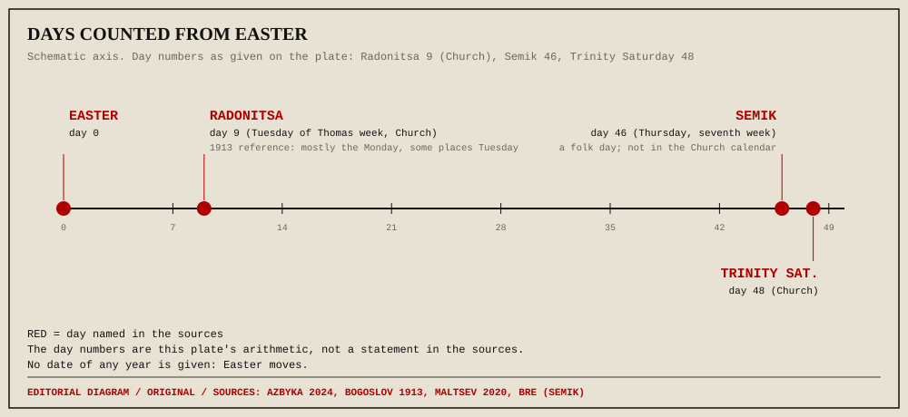
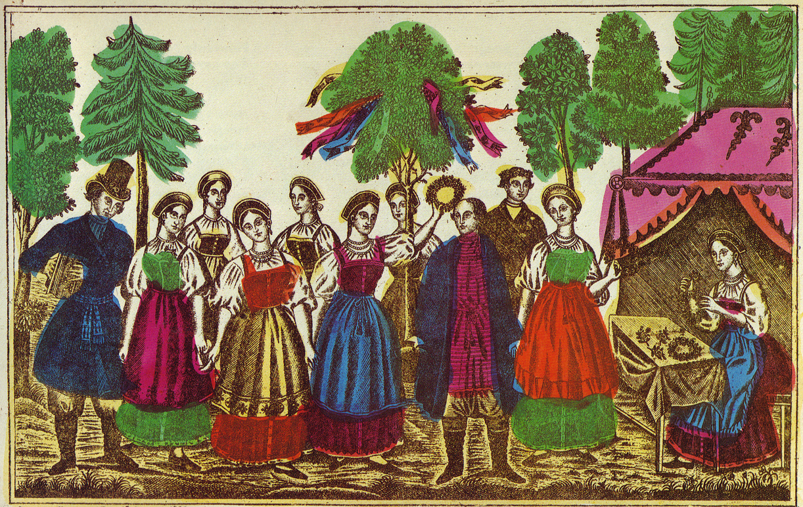
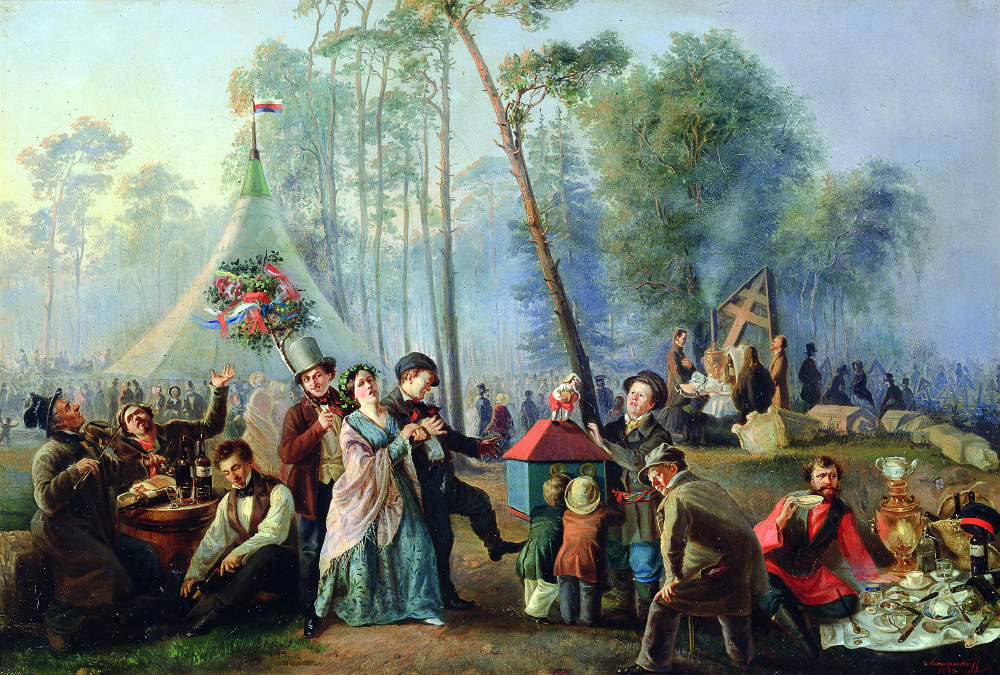

VOL. III · PLATE U · 03 / 04
THE CALENDAR OF THE DEAD
Church Saturdays, a Thursday the Church lacks and a cemetery day today
A table of who named which day of commemoration, in registers kept apart: the Church, the movable Easter calendar, the Komi-Permyak region and today’s cemetery. The parish is an open gap, and the question of origin is left open.
Church account; 1995–2016 recordings; fieldwork 2016–2017 · Church calendar; Komi-Permyak districts; Kostroma and Vladimir regions · Orthodox church calendar and regional folk practice
PART I · THE CHURCH
The Church’s own list
In a church instructional text, Hieromonk Job (Gumerov) names the Saturdays on which the Church commemorates the dead: Meat Fare Saturday, the second, third and fourth Saturdays of Great Lent, Trinity Saturday and St. Demetrius Saturday. He explains the choice of Saturday by its place as the day of rest, and says the Lenten Saturdays stand in for the daily memorial services that are suspended during the fast.
He gives St. Demetrius Saturday a precise origin: it was set up after the battle of Kulikovo in 1380, with the blessing of Sergius of Radonezh, first for the soldiers who fell and later for all the departed. This is the Church’s account of itself, written by a churchman; it is evidence for what the Church holds, not for what a village did.
PART III · REGIONAL: THE KOMI-PERMYAKS
A day the church calendar does not have
G. I. Maltsev records the commemoration days of the Komi-Permyaks: Radonitsa, Semik, Trinity Saturday, and the Saturdays before Pokrov and St. Demetrius. He writes that Semik, the Thursday of the seventh week after Easter, is absent from the Orthodox calendar, that priests took no part in it in the late nineteenth century and did from the early twentieth. After Zelenin he reports that those dead by unnatural death were commemorated at Semik, and quotes a Kungur saying that they are deaf and blind except on that day.
He also describes a slow move: the Permyaks began to hold this commemoration on the Saturdays of general remembrance, reasoning that prayers would be heard better then. His material is four recordings by one researcher, from a people who are not Russian. The plate uses it only as a regional comparison for a pattern that Russian sources describe.
Read more fully, Maltsev’s article describes a day called dzollun or sharlun, held at the cemetery, where such dead were often buried at the edge. Suicides were also remembered at home, with food set on a water barrel or on the threshold. Families bring pancakes, pies and bread, which may be left on graves or given away. Priests joined in the early twentieth century, and a memorial service is held today in the Kudymkar diocese. The article rests on published sources, on material from the Kungur and Komi Zyuzda districts, and on the author’s own fieldwork in the Yusva, Gayny and Kosa districts between 1995 and 2016.

PART IV · TODAY: KOSTROMA AND VLADIMIR
A cemetery day, 2016–2017
E. G. Chesnokova’s fieldwork in the Kostroma and Vladimir regions found the main cemetery commemoration falling in either the Easter or the Trinity period, and she says this follows regional zones. Within the period one day carries the main rites, and she divides it into a preparation, a meeting of relatives at the cemetery, a walk among the graves, commemoration at the grave, and a continuation at home.
She finds these days both family occasions and social ones, with their importance held or growing, and says collective commemoration repairs ties weakened by distance and broken family traditions. The abstract does not name the day, and the counts of respondents are not given.
U / 04
Which day, whose calendar, by which source
| Day | Where it stands | Source and status |
|---|---|---|
| Meat Fare Saturday | Church; universal commemoration | Gumerov; the Church’s own account |
| Second, third, fourth Saturdays of Great Lent | Church; stand in for suspended daily services | Gumerov; the Church’s own account |
| Radonitsa | Listed among Komi-Permyak days; not treated in Gumerov | Maltsev; regional comparison |
| Radonitsa (the Church’s present rule) | Tuesday of Thomas week, the ninth day after Easter | Azbyka news, 2024; the 1913 dictionary gives Monday, in places Tuesday |
| Semik | Absent from the Orthodox calendar; priests from the early 20th century | Maltsev; Komi-Permyak, four recordings |
| Trinity Saturday | Church; universal; also a Permyak day | Gumerov; Maltsev |
| St. Demetrius Saturday | Church; after Kulikovo, 1380 | Gumerov; the Church’s own account |
| Saturday before Pokrov | Listed among Komi-Permyak days | Maltsev; regional comparison |
| Easter or Trinity period, main cemetery day | Follows regional zones in Kostroma and Vladimir | Chesnokova; fieldwork 2016–2017 |
U / 05
What the three sources do not settle
The sources do not say where the folk days came from. A common account makes Radonitsa and Semik pagan spring feasts of the dead that the Church absorbed, but none of the three read here supports or refutes that, and the one popular essay on the subject that came up in searching was not used. What they show is narrower: two calendars that overlap, one the Church’s and one regional, and a regional practice that was moved toward the Church’s Saturdays.
The atlas therefore marks the origin question as contested and leaves it open. The calendar here is a table of who named which day, not a history of how the days arose.



Apparatus sources · related plates · terms
Sources for this plate
- gumerov2012 Hieromonk Job (Gumerov) — Why are the Dead Commemorated on Saturdays? (2012)
- maltsev2020 Maltsev, G. I. — Пермяцкие поминки и поминовения умерших не своей смертью у коми-пермяков (2020)
- chesnokova-cemetery Chesnokova, E. G. — Cemetery in the Context of the Contemporary Calendar Holiday (n.d.)
- azbyka-radonitsa2024 Azbyka.ru news desk (unsigned) — В России православные отмечают Радоницу (2024)
- bogoslov1913 Soikin, P. P. (publisher); entry unsigned — Радоница (in: Полный православный богословский энциклопедический словарь) ([1913])
- bre-semik Bolshaya rossiiskaya entsiklopediya (online edition), unsigned entry — Семик (n.d.)
URLs, access dates and limitations are in the bibliography.